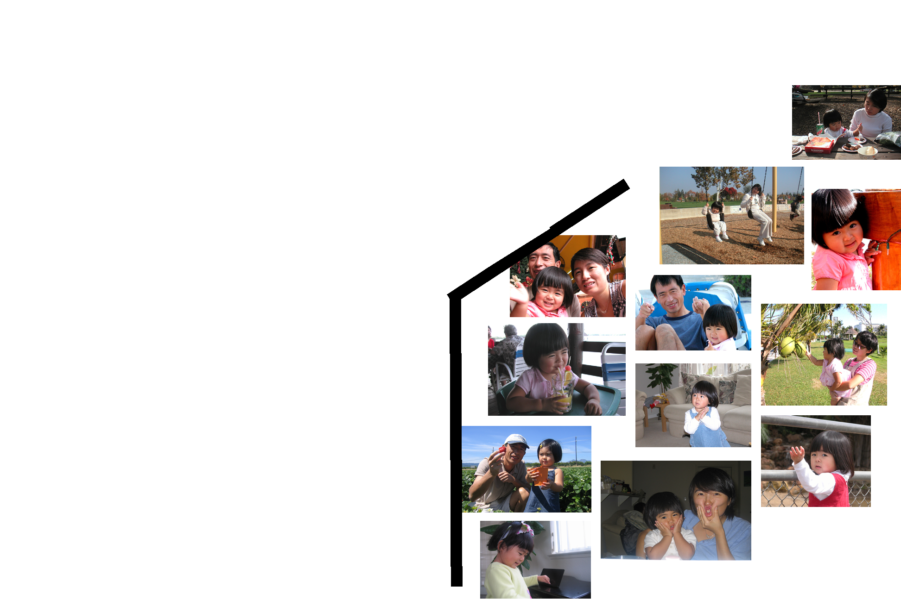
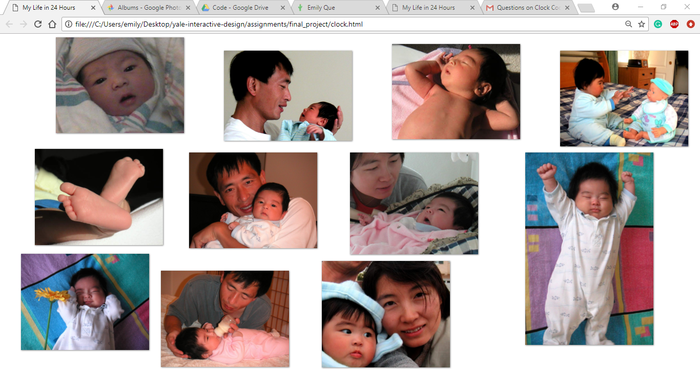

My original idea of this clock came from a simple love for looking through old photo albums of my family and me from when I was younger. As an only child, I always had plenty of cameras and eyes on me growing up so my photo supply is far from little. My computer’s picture files hold the hundreds of folders in which these photos are sorted in by year then by month then by event.

Going into the project, my plan was pretty ambitious. I’d split the day into 16 intervals to represent each year of my life so each interval would take about an hour and a half to be complete. The webpage would have 2 hands in the center of the page just as a regular clock would but instead of the “hour” hand’s complete 360-degree rotation representing 12 hours, it would represent an entire day being complete. As the hands were moving, photos of me from that “year” (interval) would appear in the space that the minute hand had already passed. Each time an interval had passed, the screen would reset and the process would start again with the next year.

I still would love to somehow find a way to complete this in the future, but due to time constraints and lack of experience, simplifications to the idea had to be made. Instead of having the photos appear following the clock hands’ paths, they would appear in a collage at the start of every interval. This minimal, image-focused webpage I realized may be confusing for many people (which is why these pages should give some clarification) but to me, it’s extremely symbolic.
I started off the project thinking about my life and making something that I felt would be also interesting for me to attempt. What I didn’t think about was the importance of the piece of work I was creating. My clock wasn’t just a running webpage of my childhood memories, it meant a lot more than that.
Thinking about life in terms of numbers in which we have labeled with the word “time” is a scary thought for most people. Watching my own life go by in 24 hours on a webpage made up of a series of commands is a strange feeling. With an entire year of my life going by in 90 minutes, it makes me consider time in a new way. No matter what year of my life it was, whether it be when I was one or fifteen, each age passes in a year never any less or never any more. It’s weird to think we go through ages without feeling any time at all. We think back to when we were two and three and remember those years as it had happened in a second, but when we think back to 2018 or even last month, it’s full of so much more life than those years as a baby. From year to year and person to person everything holds a different significance and it’s something that’s become more and more prevalent to me as I moved through this project.
So although my project isn’t what I had initially envisioned for it to be, it has become a lot more to me than it had started off as.